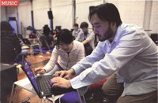

(also see: CV | publications | projects)
|
YouTunes | The Machine that Makes You Musical
New York Times Magazine | story by Rob Walker December 2011 | pdf | online "Is everyone musical? One sonic pioneer thinks so. And he has the technology to prove it..." | |
|
The iPhone's Music Man
IEEE Spectrum | profile by Tekla Perry September 2009 | pdf | online "The Ocarina app came from Stanford professor Ge Wang's sonic explorations." |
|
|
"The DIY Orchestra of the Future"
TED Talk, 2014, 18 minutes. | TED.com | mp4 "Ge Wang makes computer music, but it isn’t all about coded bleeps and blips..." | |
|
From Pocket to Stage: Music in the Key of iPhone
New York Times front page story by Claire Miller + Miguel Helft December 2009 | pdf | online "In the future, Professor Wang said, a music ensemble could be made up of any group of people playing music together, no matter where they are physically." |
|

|
Virtual Maestro
Duke Magazine | profile by Jacob Dagger July 2011 | pdf | online "With a series of popular mobile apps that turn the iPhone into a musical instrument, Ge Wang hopes to change the way we think about music." |
|
Stanford Researcher Uses Cell Phones to Make Music
Stanford University feature by Cynthia Haven March 2009 | online "The sound is unearthly—the sort of hypnotic drone you might hear from the chanting of state-of-the-art Tibetan monks. Or a vibration picked up via radio signals from another galaxy." |
|

|
So Many iPhone Apps, So Little Time
New York Times | by David Pogue March 2009 | online "It’s one of the most magical programs I’ve ever seen for the iPhone, and probably for any computer. It’s Ocarina, named after the ancient clay wind instrument." |
|
Blow It Out Your iPhone
Inventors Digest cover story September 2009 | pdf | online "Ge Wang and his students are reinventing ways to make music. The Stanford professor is conducting an ongoing instrument and techno-sociology experiment with mobile phones. Inventors of all stripes are invited to join together with the band." |
|
|
Leading a Big Parade of iPhone Apps
USA Today | by Jefferson Graham April 2009 | pdf | online "We believe in the potential of interactive sound; we believe that everyone is inherently creative; and we want to unlock that creativity in everyone..." | |
|
Stanford's Orchestra of Laptops
San Francisco Chronicle | by Joshua Kosman June 2010 | pdf | online "You've now entered the world of Slork, one of various high-tech musical projects under way at CCRMA, Stanford's Center for Computer Research in Music and Acoustics." |
 |
back home